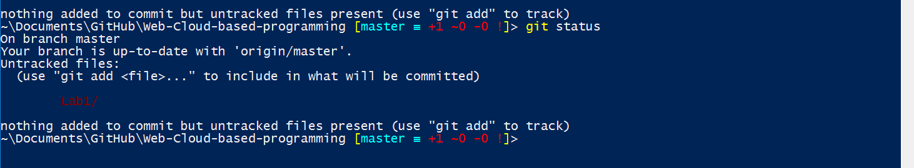
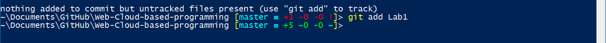

CS5590/490-0002: Programming for Web/Cloud based Application
Lab Assignment-1 - Github
Github
GitHub is a web-based Git or version control repository and Internet hosting service. It is mostly used for code.
It offers all of the distributed version control and source code management (SCM) functionality of Git as well as
adding its own features. It provides access control and several collaboration features such as bug tracking, feature
requests, task management, and wikis for every project. GitHub offers both plans for private and free repositories
on the same account which are commonly used to host open-source software projects.
Various operations performed in Git in order to setup repository and publish the code:
Once we select the new repository option we will be redirected to another page where we need to give a name to the repository.
With creation of repository we can also create a readme file for the repository by checking the option as shown in the figure below.
In my case I have named my repository as Web-Cloud-based-programming
Now that we have created a repository in our public git account, we still do not have the repository structure in our local.
We can create a local repository in our system by cloning the repository to local. If we clone the repository a
replica of our public repository will be created in our local system. We can clone the public repository into our local in two ways.
Clone using URL and Git shell
Clone using Git desktop
Clone using URL and Git shell:
We can clone repository into our local by accessing the clone URL available on our repository page as show in the figure below.
We need to copy the link and run it through git shell using the command git clone "https://github.com/EshaMayuri/Web-Cloud-based-programming.git"
Please refer the picture below.
We need to open the GIT desktop application click on the '+' sign on the desktop and select the clone option. Then try to filter the repository and clone it into the desired location
on the system.
Now that we have created a repository in our local, we can work on the repository in our local.
Once we are sure our code is correct and bug free, we can push our changes to public repository which will be accessible by anyone.
We can push the changes to public repository in two ways.
Moving changes using Git shell(command prompt)
Moving changes using Git desktop
Moving changes using Git shell(command prompt):
This process of moving changes to public repository using Git shell can be done in 3 steps.
Staging the files to be committed.
Committing files.
Pushing changes to public repository.
Staging the files to be committed:
Whenever we make any changes in our local we stage the files so that the staged changes can be pushed in
the next commit. We can check if any files where modified and that needs staging using git status(Please refer the figure below).
Sagging the files can be done using the command git add file_name/folder_name(Please refer the figure below).


Committing staged files:
No that we have staged the files we need to commit the staged files. We can commit the staged files using command
git commit -m "commit comments"(as shown in figure below).
Whenever we commit the files we are committing the
changes to our private git.
When we commit we are actually not moving changes to public repository.
We need to push the committed files using git push command(refer the figure below).
This process of moving changes to public repository using Git desktop can be done in 2 steps.
Committing changes.
Synching the committed files
Committing changes:
Whenever we access the git desktop and the corresponding repository, the git desktop displays the changes
made from the last synchronization task(Please refer the figure below).
If we want to commit the changes to our private git we need to provide git commit command in summary tab and
commit the changes to master(As shown in figure below). Input in description tab is optional.
As discussed when we commit we are actually not moving changes to public repository.
Here in Git desktop we need to select the sync option available in order to push the changes to our public repository
(refer the figure).